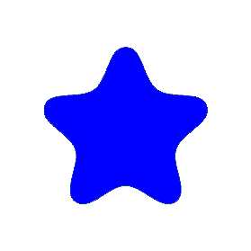

| | Hjem | Clara Rosenkvist's portofolio |
|---|
|  | Hobbyer |
|---|
Mine hobbyer går mest ud på et eller andet på de sociale medier, i øjeblikket. Det gælder mest i at kunne træne mine egne færdigheder i at kunne redigere videoer og generelt lave godt indhold til sociale medier. Dette har mest være fokus på TikTok Shorts, men er i øjeblikket på vej over i at prøve at lave langt format indhold til Youtube. |
|---|
Udover det kan jeg godt lide at se Anime og læse Mangaer i min fritid. Mine yndlings genre er fantasi og ligne. Jeg skriver også lidt i min fritid, eftersom jeg også er interesseret i at skrive historier. |